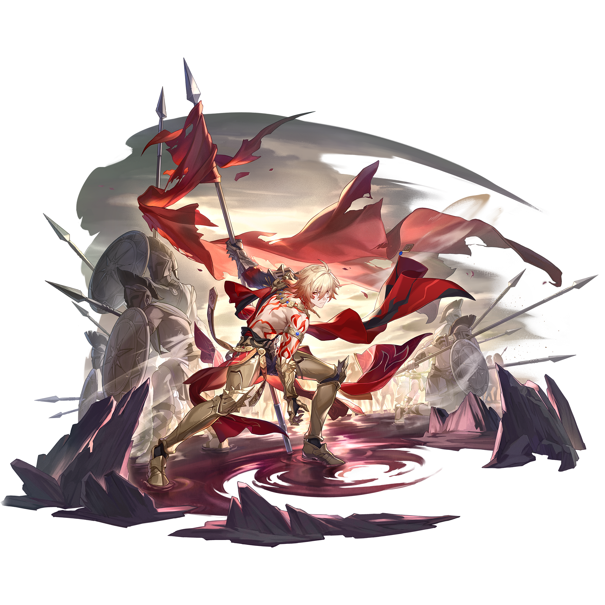
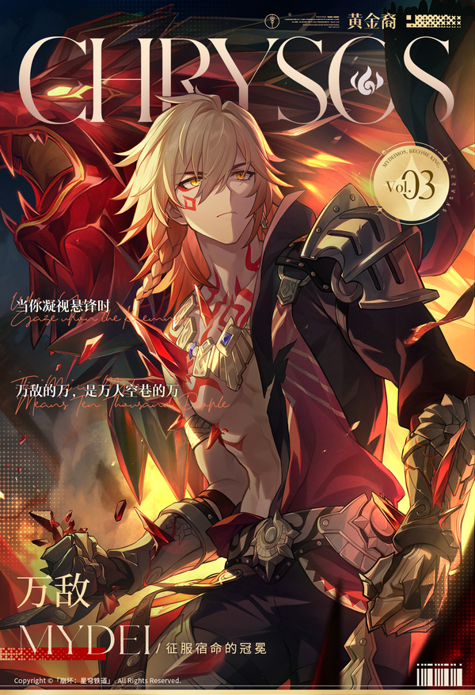

不死的迈德漠斯，离群的狮子，逐猎「纷争」火种的黄金裔。

THE CROWN OF STRIFE · 角色专题
一个以万敌为唯一主角、兼顾角色设定、战斗理解、养成决策与视觉气质的中文玩家专题。
产品方已提供资料 · 内容来源可追溯 · 非官方网站

01 · CHARACTER FILE
角色信息来自产品方提供的专题页与米游社词条；来源未提供的字段标记为“待补充”。

不死的迈德漠斯，离群的狮子，逐猎「纷争」火种的黄金裔。
02 · COMBAT ARCHIVE
使用标签页分组查看已提供的技能、行迹加成与星魂资料。
03 · FIELD NOTES
展示来源词条提供的光锥、遗器与词条选择。
04 · FORMATION
按功能位整理来源词条中的角色选择，便于快速替换。
05 · ROTATION
来源已提供技能机制；完整输出循环尚未提供时保持待补充。
07 · GALLERY
浏览产品方已确认可直接使用的站内图片素材。